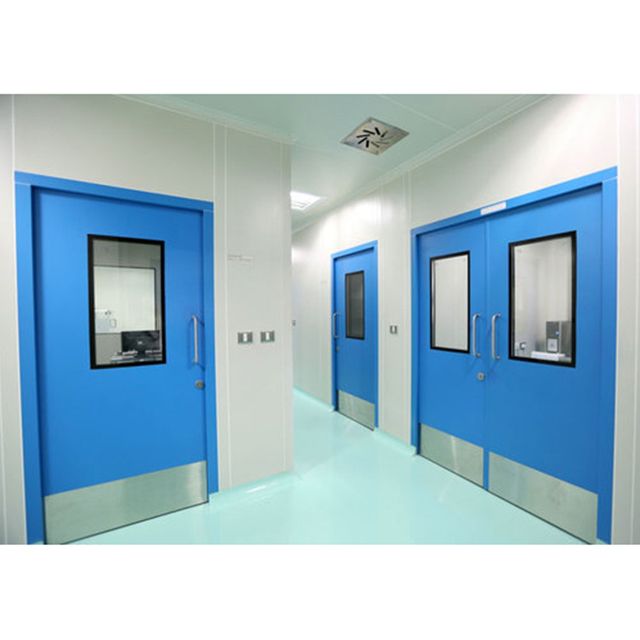

doors, also known as lead-lined doors, are specialized barriers designed to provide radiation shielding—primarily in medical, laboratory, and certain industrial and security settings. Their core purpose is to block or reduce harmful radiation, such as X-rays and gamma rays, from leaking into adjacent areas, thus protecting people and sensitive equipment. Key Details about Lead Doors: Structure and Materials: The core component is a sheet of lead sandwiched within the doors construction, typically ranging from 0.8 mm up to 6 mm in thickness depending on the required shielding level. Exteriors can be made from wood, steel, or plastic laminate, often designed to match standard architectural doors for aesthetic integration. The frames are also lead-lined and made from wood or metal, ensuring there are no gaps through which radiation can leak. Doors are available as hinged, sliding (manual or automatic), and can feature glass-lites (windows) for visibility. Common Applications: Hospitals and clinics: For X-ray, MRI, CT scan, and imaging suites, as well as nuclear medicine and cancer therapy rooms. Industrial settings: Security screening rooms, aerospace facilities, and nuclear power plants. Research laboratories and other environments needing strict radiation containment. Performance and Safety: Certified to block up to 90% or more of specific forms of radiation depending on lead thickness and construction. Must comply with strict regulatory and safety standards (e.g., AERB in India, DRS, or international equivalents). Physical Properties: Due to the high density of lead, these doors are significantly heavier than typical doors; specialized hardware (hinges, locksets) is required to support the weight. Standard wood doors may have overall thicknesses ranging from 43 mm to 45 mm or more, with metal options available for additional durability. Maximum single door sizes can reach (single swing) or larger, depending on the manufacturer and lead thickness. Customization & Aesthetics: Available in a variety of veneers (e.g., birch, oak, maple) and finish options to blend with interior designs. Can be ordered as single units or as complete door sets (pre-hung with frames and hardware) for easier installation. Options for fire ratings, sound attenuation, and antibacterial finishes are available. Installation and Maintenance: Proper installation is essential to prevent “shielding leakage”; any penetration through the lead lining (for hinges, locks, etc.) must be carefully designed so as not to compromise effectiveness. Maintenance generally involves routine checks for hardware integrity and seal continuity, especially if the door is subject to heavy use. Lead doors are a critical component of modern radiation-safe environments and are customizable to meet the specific shielding, size, and functional needs of diverse clients
